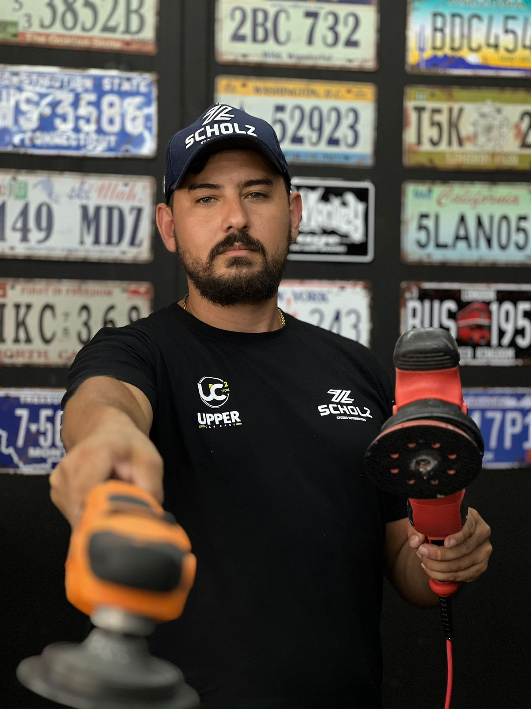
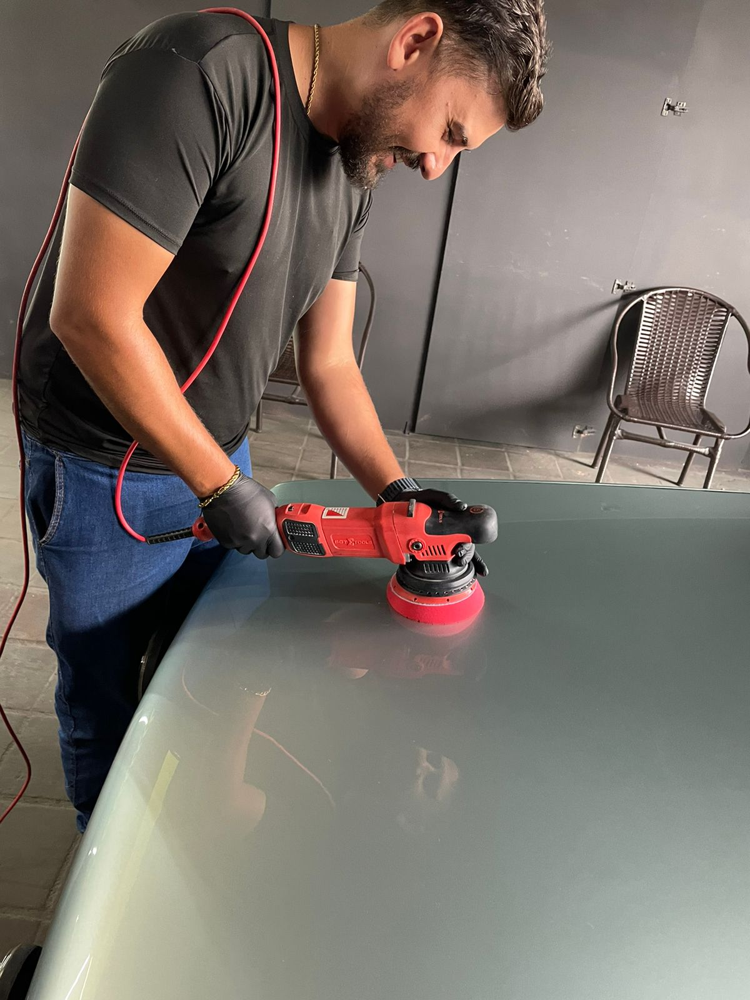

NOSSA EQUIPE

A equipe da AutoDelux é composta por profissionais altamente capacitados e experientes no ramo automotivo. Cada membro da equipe é selecionado cuidadosamente para garantir que ofereçam o melhor serviço aos clientes. Eles estão sempre atualizados com as últimas tecnologias e tendências do mercado, garantindo que seu carro receba o tratamento adequado. Além disso, a equipe da AutoDelux valoriza a transparência e a honestidade, proporcionando aos clientes um atendimento confiável e de qualidade. Com a AutoDelux, você pode ter certeza de que seu veículo está em boas mãos.
Outro ponto forte da equipe da AutoDelux é a sua abordagem transparente e honesta. Eles fornecem aos clientes todas as informações necessárias sobre os serviços prestados, incluindo o diagnóstico do veículo e o orçamento detalhado, para que os clientes possam tomar decisões informadas. Em resumo, a equipe da AutoDelux é o coração do negócio, garantindo que cada cliente receba um serviço de alta qualidade, confiável e personalizado.
